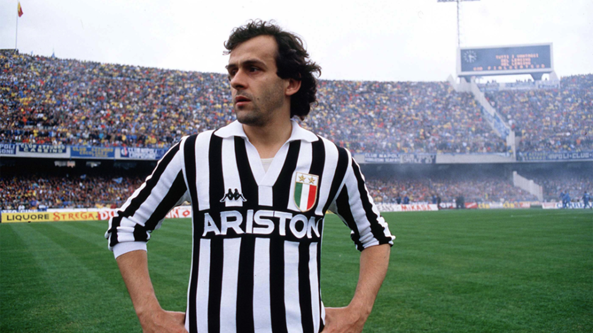

Juventus FC Home Kit
1985

In 1985, I embarked on a remarkable journey to Turin for the eagerly anticipated Derby della Mole, an experience that would forever be etched in the tapestry of my footballing memories. Navigating the vibrant streets of Turin, I could feel the city pulsating with the anticipation of the impending clash between Juventus and Torino. Arriving at the iconic Stadio delle Alpi, the atmosphere was electric, with fans passionately rallying behind their respective teams. Amidst the fervor, I found myself drawn to a bustling merchandise stand, where the allure of the famous Michel Platini kit proved irresistible. The classic black and white stripes, emblazoned with Platini's name and number, became more than just a jersey; it symbolized my allegiance to Juventus and commemorated the timeless artistry of the football legend. As I proudly wore the iconic kit, I felt an immediate connection to the historic legacy of the club. The match itself unfolded as a captivating display of skill and determination, with Juventus emerging victorious in a momentous contest. The Platini kit, now a cherished relic, serves as a tangible reminder not only of the thrilling travel to witness the Derby della Mole but also of the camaraderie and passion that define the essence of football fandom.